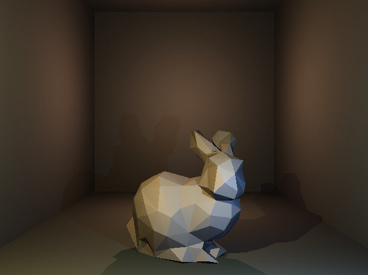
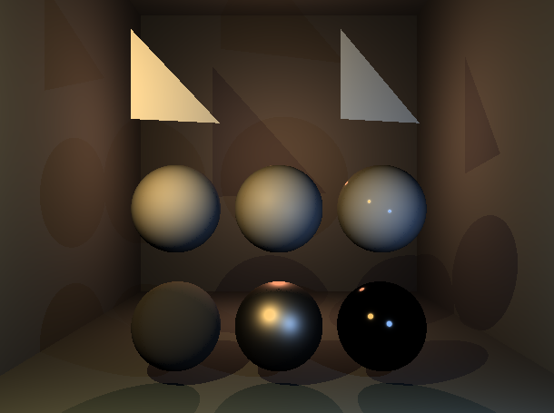

Basic Raytracer
A basic raytracer renderer that is capable of loading a model, and uses PBR.
Software
- Visual Studio
Repository


A basic raytracer renderer that is capable of loading a model, and uses PBR.
- Visual Studio